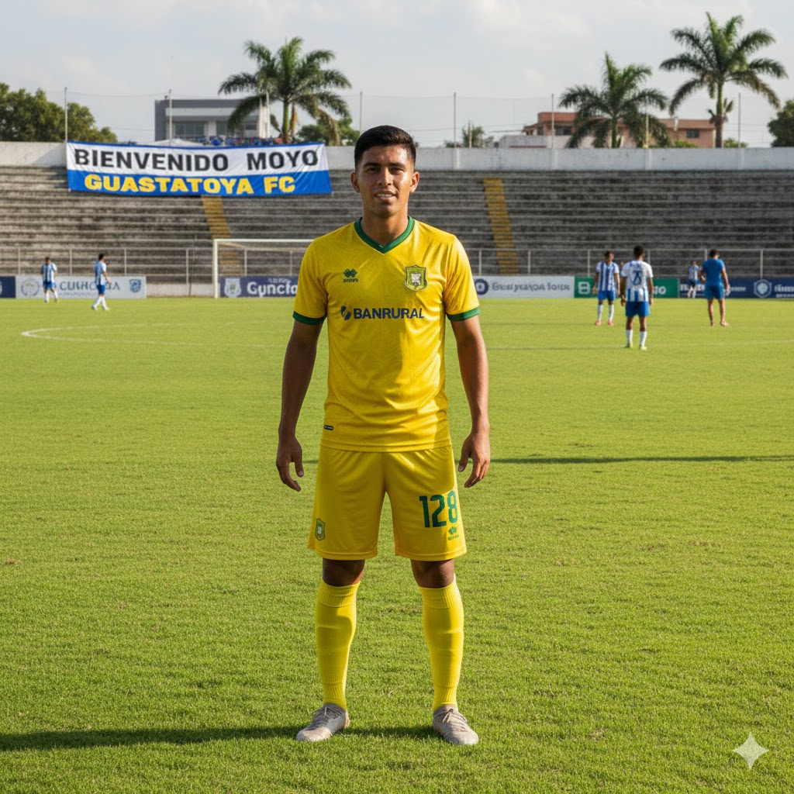

Diego Guevara 24128
Sistemas y tecnologias Web
Mi historia respecto a fuchibol
Guastatoya FC
Llegás a Guastatoya y se siente diferente: cancha caliente, gente bien cabrona y presión de verdad. El profe te ve y dice: "si sos cabron, demostralo de una vez si no comes banca."
Te dan tu primer entreno con el primer equipo. Vos sos el Moyo, pero acá nadie regala nada.
